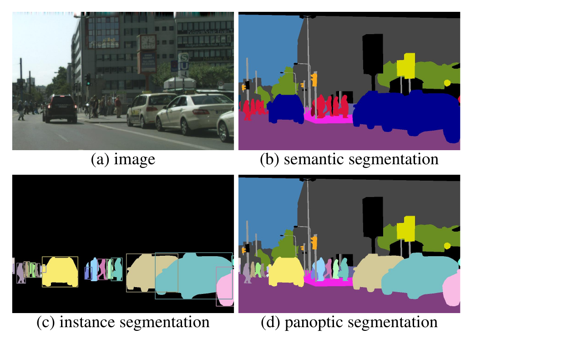
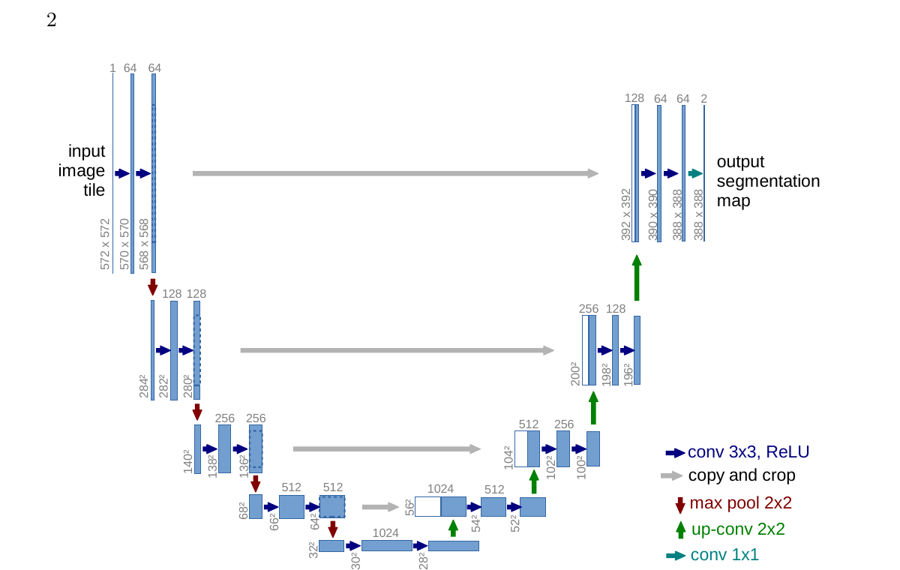
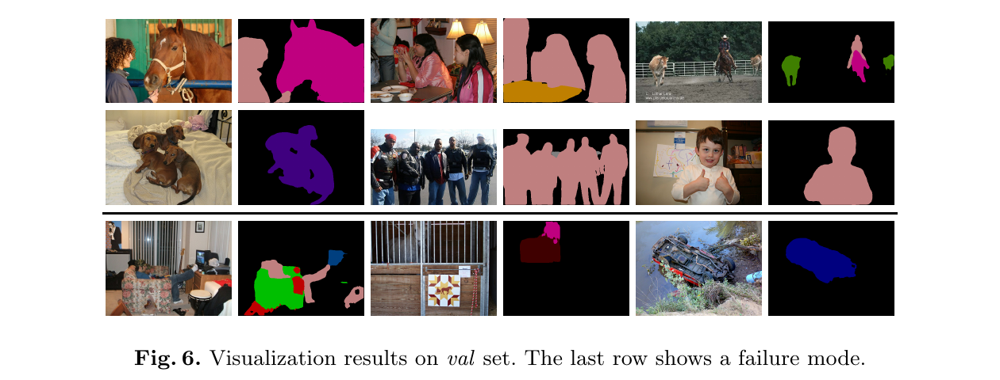
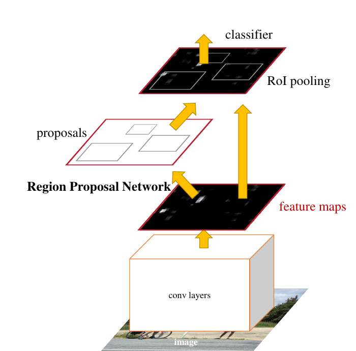
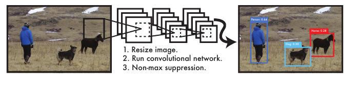
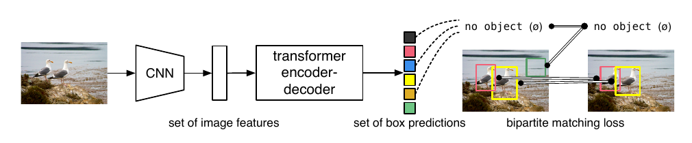
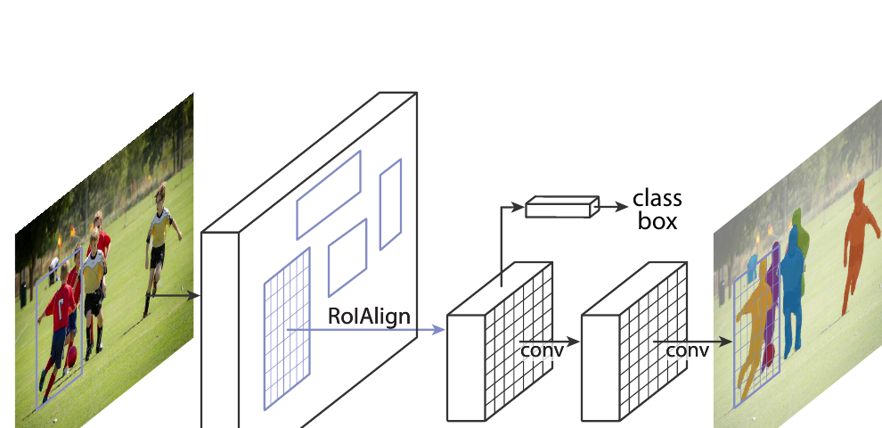
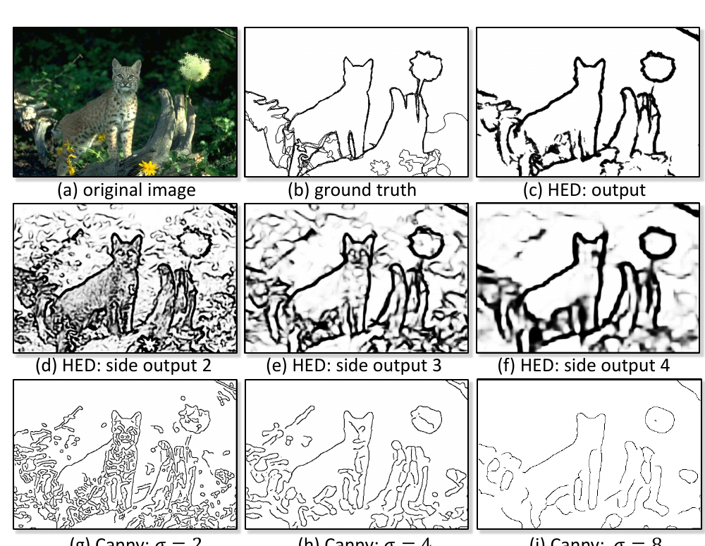

A detailed guide to semantic, instance, and panoptic segmentation; object detection; edge detection; and their evaluation
Author
Dr. A. Belcaid
PART V · LEARNING FROM IMAGES
One street scene is interpreted through bounding boxes, semantic regions, instance masks, and edge contours. Original course illustration generated for this chapter.
An image-level classifier can correctly say “street scene” while remaining silent about the questions that make the prediction useful: Where is each cyclist? Which pixels are road? Do two touching pedestrians belong to one instance or two? Where does the sidewalk boundary run?
This chapter studies tasks whose outputs preserve spatial structure. The unifying principle is simple: first specify the smallest output that supports the intended decision; only then choose a model family, training target, and evaluation measure.
By the end of this chapter, you should be able to
Distinguish classification, detection, semantic segmentation, instance segmentation, panoptic segmentation, and edge detection by their output contracts.
Explain why dense prediction must combine semantic context with spatial precision.
Trace the information paths in FCN, U-Net, and DeepLabv3+.
Explain proposals, one-stage dense prediction, set prediction, matching, and non-maximum suppression.
Derive intersection over union and mean IoU from concrete predictions.
Explain how Mask R-CNN extends detection and why ROIAlign matters.
Distinguish local intensity edges from learned perceptual boundaries.
Choose a suitable output, model family, and evaluation measure from an application specification.
1 Start with the required prediction
Consider one urban photograph containing a car, two cyclists, a pedestrian, buildings, road, sidewalk, and sky. The pixels are identical in every row below; only the required answer changes.
Question
Smallest sufficient output
What is intentionally absent?
Is a cyclist present?
One image-level label or probability
location, count, shape
Where is every cyclist?
A set of labeled boxes
exact silhouettes
Which pixels are road?
One class label per pixel
object identity
How many cyclists are present, and which pixels belong to each?
One mask per cyclist
labels for uncountable background regions
Explain every pixel and preserve the identity of countable objects
One panoptic scene partition
overlapping assignments
Where does appearance change rapidly?
An edge-strength map
object class and identity
The distinction is not cosmetic. It changes every part of the learning problem:
Five-part frame
Spatial-prediction consequence
Data
Labels may be boxes, class maps, instance masks, or boundary traces.
Hypothesis
The model must emit a compatible grid or variable-size set.
Loss
Training must compare the same structures, often after an assignment step.
Optimization
Dense outputs increase memory and create severe class imbalance.
Evaluation
Classification accuracy cannot judge localization or boundary quality.
Cityscapes illustrates the annotation burden. Its authors collected urban video from 50 cities and released 5,000 images with fine pixel-level annotations plus 20,000 with coarse annotations (Cordts et al. 2016). A box is cheaper to annotate than a precise mask; a panoptic partition is richer still. Asking for more structure has a real data cost.
1.1 Three meanings of “segment the image”
Semantic segmentation assigns a class to every pixel. All pixels labeled person share one category even when they belong to different people.
Instance segmentation returns a separate mask for each countable object. Two touching people remain distinguishable because identity is part of the output.
Panoptic segmentation partitions the complete image. Countable things such as people and cars receive both category and instance identity; amorphous stuff such as road and sky receives a category but not an arbitrary instance number (Kirillov et al. 2019).

Figure 1: A real street photograph is compared with semantic, instance, and panoptic annotations. Source: Kirillov et al., Figure 1.
Coverage: must every pixel receive an explanation?
Identity: must different objects of the same category remain separate?
Semantic segmentation provides coverage without identity. Instance segmentation provides identity for things without necessarily covering stuff. Panoptic segmentation requires both.
2 Semantic segmentation: classification at every pixel
Let an input batch have shape (N, 3, H, W) and suppose there are \(K\) semantic classes. A segmentation model emits logits
\[
Z\in\mathbb{R}^{N\times K\times H\times W}.
\]
At pixel \((i,j)\), the vector \(Z_{:,i,j}\) is a \(K\)-class classification problem. The predicted map is
\[
\hat y_{i,j}=\arg\max_k Z_{k,i,j}.
\]
For a target class map \(y\in\{0,\ldots,K-1\}^{H\times W}\), pixel-wise cross-entropy is commonly averaged over valid pixels:
\(\Omega\) excludes ignored or unlabeled pixels. The loss is familiar classification loss, but its spatial repetition creates new difficulties: adjacent pixels are correlated, large classes contribute many more terms, and small objects may occupy only a few cells.
import torchfrom torch.nn import functional as Flogits = torch.randn(4, 19, 256, 512) # N, K, H, Wtarget = torch.randint(0, 19, (4, 256, 512))loss = F.cross_entropy(logits, target, ignore_index=255)prediction = logits.argmax(dim=1) # N, H, W
The tensor contract matters: cross_entropy expects the class axis before the spatial axes, while the integer target omits that class axis.
2.1 The context–precision tension
A classifier usually reduces spatial resolution. After five stride-two operations, a \(224\times224\) input becomes a \(7\times7\) feature map. Each deep location sees broad context, which helps distinguish a pedestrian from a narrow signpost, but a seven-cell grid cannot precisely trace fingers, bicycle spokes, or a thin curb.
Upsampling a coarse prediction changes its size, not its information. If several boundary positions collapsed into the same deep cell, interpolation cannot infer which original position was correct. Dense architectures therefore need two complementary resources:
deep, coarse features for semantic context;
shallow, fine features for localization.
2.2 FCN: keep a spatial output
Fully Convolutional Networks replaced a classifier’s dense head with spatial operations and trained the network end to end from pixels to pixels (Long et al. 2015). The central move is architectural: do not collapse the feature grid into one vector. Produce a coarse class-score grid, upsample it, and combine deep semantic features with shallower spatial features through skip connections.
The paper describes the tension directly: global information answers what, while local information answers where. Its FCN-32s, FCN-16s, and FCN-8s variants progressively fuse finer features. The names refer to the effective output stride before final upsampling, not to the number of layers.
2.3 U-Net: a symmetric path back to resolution
U-Net makes the recovery path explicit (Ronneberger et al. 2015). Its encoder repeatedly builds context while reducing resolution. Its decoder upsamples and combines the result with features copied from the corresponding encoder level.

Figure 2: The original U-Net architecture has a contracting path, an expanding path, and copy-and-crop connections between matching resolutions. Source: Ronneberger et al., Figure 1.
The skip connection does not merely make optimization easier. It transfers localization evidence that would otherwise have to pass through the bottleneck. The decoder learns to combine two different descriptions of the same region:
The 2015 architecture used valid convolutions, so feature maps shrank and encoder features were cropped before concatenation. Many modern implementations use padding and concatenate equal-sized grids directly. The transferable principle is the multi-resolution information path, not the historical crop.
NoteAddition and concatenation make different promises
A residual addition assumes two tensors describe compatible features with equal shape. A U-Net concatenation preserves both feature sets as separate channels and lets later convolutions learn how to mix them. Concatenation increases channel count and memory; it does not automatically guarantee that fine detail will be used.
2.4 DeepLab: enlarge context without another stride
An atrous, or dilated, convolution spaces its kernel samples apart. In one dimension, a kernel of size \(k\) with dilation \(d\) has effective size
\[
k_{eff}=k+(k-1)(d-1).
\]
For \(k=3\) and \(d=2\), three learned positions cover an effective width of five. The parameter count is unchanged; the sampled field becomes wider. Atrous Spatial Pyramid Pooling applies several dilation rates in parallel so the prediction can use context at multiple scales.
DeepLabv3+ combines this multi-scale encoder with a decoder that recovers sharper boundaries (Chen et al. 2018). In the paper’s Cityscapes experiment, the reported test score was 82.1% mIoU under its stated setting. That is a historical paper result, not a universal score for the architecture.

Figure 3: DeepLabv3+ qualitative results include successful predictions and a final row of failure cases. Source: Chen et al., Figure 6.
Read Figure 3 diagnostically. Large surfaces and many object silhouettes are accurate, but thin structures, occlusion, rare appearances, and ambiguous boundaries remain difficult. A visually plausible color map is not sufficient evidence; we need a metric.
2.5 Intersection over union and mean IoU
For a class \(c\), define the predicted pixel set \(P_c\) and target set \(G_c\). Their intersection over union is
True negatives do not appear. In a road scene, most pixels may be “not pedestrian”; counting those easy negatives would make a poor pedestrian mask look deceptively strong.
Worked example. A target car occupies 120 pixels. The model marks 140 pixels as car, and 100 pixels overlap the target. Then
If road, car, and pedestrian IoUs are \(0.90\), \(0.60\), and \(0.30\), then mIoU is \(0.60\). The large road region cannot numerically hide weak pedestrian performance. Dataset protocols still matter: they define ignored labels, absent classes, and whether scores are averaged over images or accumulated over the dataset.
3 Object detection: predict a set of localized objects
where \(\hat b_i\) is a box, \(\hat c_i\) a class, and \(\hat s_i\) a confidence score. Unlike segmentation, there is no natural “object number 1” at a fixed tensor position. Output order should not change the meaning of the set.
3.1 Boxes are geometric claims
A box may be stored as corner coordinates \((x_{min},y_{min},x_{max},y_{max})\) or center-size coordinates \((c_x,c_y,w,h)\). Conventions must also specify whether coordinates are pixels or normalized values and how boundary pixels are counted.
Box IoU uses the same set principle as mask IoU, but the sets are rectangular areas. Suppose a \(100\times80\) target box overlaps a \(120\times70\) prediction over an \(80\times60\) rectangle. Then
The class can be correct while localization is poor. Detection evaluation must judge both.
3.2 Why one object creates many candidates
Dense detectors evaluate many spatial positions, scales, or candidate boxes. Several candidates can surround the same car. During training, the system needs a rule assigning candidates to targets. During inference, it needs a rule for turning overlapping candidates into final detections.
Non-maximum suppression (NMS) is a common inference rule:
sort candidates by confidence;
keep the highest-scoring box;
suppress lower-scoring boxes whose IoU with it exceeds a threshold;
repeat with the remaining candidates.
NMS is not a classifier and is usually not learned. A low suppression threshold removes duplicates aggressively but may erase two nearby objects. A high threshold preserves nearby objects but may leave duplicates.
3.3 Two-stage detection: propose, then inspect
Faster R-CNN gives different modules different responsibilities (Ren et al. 2015). A shared CNN first computes one feature map for the image. A Region Proposal Network predicts likely object regions and objectness scores. Region features are then pooled into a fixed spatial size and passed to a head that classifies and refines each proposal.

Figure 4: The original Faster R-CNN figure shows shared convolutional features feeding a Region Proposal Network and an ROI-based detection head. Source: Ren et al., Figure 2.
The proposal stage should favor recall: missing an object leaves the second stage nothing to inspect. The second stage can spend more computation on fewer regions. “Two-stage” describes this allocation of work; it does not guarantee greater accuracy in every deployment.
3.4 One-stage detection: predict densely in one pass
The original YOLO formulation predicted boxes and class probabilities directly from the full image in one network evaluation (Redmon et al. 2016). This unified design made the speed–accuracy trade-off concrete and helped establish one-stage detection as a major family.

Figure 5: The original YOLO system resizes an image, runs one convolutional network, and applies non-maximum suppression. Source: Redmon et al., Figure 1.
Modern one-stage detectors differ substantially from the 2016 model, but the durable structural choice remains: distribute classification and localization predictions densely rather than running a substantial per-proposal head.
3.5 Set prediction: supervise unique assignments
DETR treats detection explicitly as set prediction (Carion et al. 2020). It maintains a fixed number \(Q\) of output slots. A transformer produces one class distribution and box per slot. Because the target objects have no canonical order, training solves a one-to-one bipartite matching between predictions and ground truth.

Figure 6: DETR maps an image through a CNN and transformer to a fixed set of predictions, then matches predictions uniquely to ground-truth objects. Source: Carion et al., Figure 1.
If the matching is \(\sigma\), a simplified objective has the form
Every target owns one matched prediction; unmatched slots learn the valid class “no object.” The assignment resolves duplicate responsibility during training and lets the original system avoid NMS. The conceptual change is the supervision of an unordered set, not merely the use of a transformer.
3.6 Precision, recall, and average precision
For one class and one IoU threshold, a prediction is a true positive when it matches an unused ground-truth object with sufficient IoU. A duplicate prediction of an already matched object is a false positive. An unmatched ground-truth object is a false negative.
Sort detections by confidence and lower the acceptance threshold. Recall usually rises because more objects are recovered, while false positives may reduce precision. Average precision (AP) summarizes the resulting precision–recall curve. Benchmarks such as COCO report averages across categories and multiple IoU thresholds; stricter thresholds reward more precise boxes.
Warning“mAP” is incomplete without the protocol
PASCAL VOC and COCO use different category sets, IoU conventions, and averaging rules. A number called mAP is not interpretable without naming the dataset and protocol. Never compare two reported values merely because both are percentages.
4 Instance and panoptic segmentation
Semantic segmentation cannot reliably count touching people: the output contains the category person, not an identity variable. Connected components are not a general repair because occlusion can split one object while contact can join two.
4.1 Mask R-CNN: add a mask question to each region
Mask R-CNN extends Faster R-CNN with a parallel mask branch for every selected region (He et al. 2017). The class and box heads ask what object is this and where is its extent? The mask head asks which pixels inside this region belong to it?

Figure 7: Mask R-CNN extends the Faster R-CNN region pipeline with a parallel fully convolutional mask branch. Source: He et al., Figure 1.
The mask branch predicts one small binary mask per class for each region. During training, only the channel corresponding to the target class contributes to the mask loss. This decouples category competition from mask shape: the classification head chooses the category, while the selected mask channel learns the silhouette.
4.2 Why ROIAlign matters
ROI pooling converts differently sized regions into a fixed-size feature grid, but rounding region boundaries to integer feature coordinates introduces spatial misalignment. Classification may tolerate a one-cell shift; a pixel mask exposes it.
ROIAlign samples at fractional coordinates and uses bilinear interpolation. For a point \((x,y)\) between four feature values, it computes a distance-weighted combination rather than rounding to one cell. Mask R-CNN’s ablations showed that this small geometric correction was especially important for stricter mask localization (He et al. 2017).
The broader lesson is reusable: when the target is spatially precise, every resizing, stride, crop, and coordinate convention becomes part of the model’s contract.
4.3 Panoptic segmentation: one coherent scene
Panoptic segmentation requires exactly one semantic label at every pixel and one instance identifier for every thing pixel (Kirillov et al. 2019). A model or post-processing stage must reconcile overlapping instance masks with a semantic background map. The final output cannot assign one pixel simultaneously to two cars or leave a road hole unexplained.
Panoptic Quality decomposes into segmentation quality and recognition quality:
\(SQ\) asks how well matched regions overlap. \(RQ\) penalizes missing and spurious regions. The factorization prevents excellent boundaries on a few easy objects from hiding failures to recognize the rest of the scene.
5 Edge detection: local change versus perceptual boundary
An edge map assigns a strength to every pixel, indicating rapid local image change. A strong edge may coincide with an object boundary, but it may also arise from a shadow, painted stripe, texture, specular highlight, or illumination change.
5.1 Derivatives turn transitions into peaks
For a one-dimensional intensity signal \(I(x)\), constant regions have derivative near zero, while a dark-to-bright transition creates a positive peak. A centered discrete difference is
The gradient direction points toward fastest intensity increase and is perpendicular to the visible edge. A vertical boundary therefore produces a strong horizontal derivative.
Sobel kernels estimate both components while smoothing slightly in the perpendicular direction:
Canny derived an edge detector around three goals: good detection, good localization, and a single response to one edge (Canny 1986). The practical pipeline assigns a responsibility to each stage:
Gaussian smoothing reduces high-frequency noise before differentiation amplifies it.
Gradient estimation measures strength and direction.
Non-maximum suppression keeps a local maximum across the gradient direction, thinning a broad ridge.
Double thresholding and hysteresis seed contours with strong responses and retain weak responses only when connected to a strong edge.
Figure 8: A real photograph progresses through grayscale, Gaussian blur, gradient magnitude, non-maximum suppression, double thresholding, and hysteresis. Course-generated figure following Canny’s procedure.
A low threshold preserves faint boundaries but admits texture and noise. A high threshold gives a cleaner map but breaks low-contrast contours. Hysteresis uses connectivity to make a better decision than either threshold alone, but its scale and thresholds remain application choices.
5.3 Learned boundaries ask a different question
The Berkeley segmentation benchmark collected multiple human segmentations of natural images, making perceptual boundary agreement measurable (Arbeláez et al. 2011). HED reframed boundary prediction as deeply supervised image-to-image learning with side outputs at several CNN depths (Xie and Tu 2015).

Figure 9: The HED paper compares a real image, human boundary annotation, fused HED output, side outputs, and Canny at three smoothing scales. Source: Xie and Tu, Figure 1.
Figure 9 exposes the mechanism. A shallow side output responds to fine texture. Deeper outputs use larger receptive fields and become coarser and more global. Fusion combines these scales. Canny’s smoothing parameter instead creates a direct trade-off: small scale preserves clutter; large scale removes clutter and legitimate detail together.
The comparison should not be overstated. HED learns the annotation policy of its dataset; it does not discover a universal definition of “meaningful boundary.” Domain shift, annotation disagreement, and rare structures remain relevant.
5.4 Boundary evaluation
Exact pixel equality is too strict when two traces differ by one pixel. Boundary benchmarks therefore match predicted and ground-truth edge pixels within a localization tolerance, then compute precision and recall. A threshold on the edge-strength map produces one operating point; sweeping it produces a precision–recall curve.
The HED paper reports ODS (one threshold optimized for the dataset), OIS (a best threshold per image), and AP (area-style summary of precision and recall) (Xie and Tu 2015). These measure different capabilities. A large gap between OIS and ODS suggests that the best threshold varies substantially across images.
6 Choosing the task, model, and metric together
The architecture name should be the last decision, not the first.
Required decision
Smallest sufficient output
Representative family
Evaluation evidence
Flag whether a helmet appears
image label
CNN classifier
accuracy, precision/recall
Count and locate every helmet
labeled box set
Faster R-CNN, one-stage detector, DETR
AP across IoU thresholds
Measure total road area
semantic class map
FCN, U-Net, DeepLab
road IoU, class-wise mIoU
Count cyclists and measure each silhouette
instance masks
Mask R-CNN-style instance segmentation
matched mask AP/IoU
Explain the complete traffic scene
panoptic partition
joint semantic–instance system
PQ, SQ, RQ
Trace material transitions for metrology
edge map
Canny or learned boundary detector
boundary precision–recall
A richer output is not automatically better. If a decision only requires an image-level alarm, collecting pixel masks may waste annotation effort. Conversely, if occupied area matters, boxes systematically include background and are insufficient even when their AP is high.
6.1 Failure analysis should follow the contract
When a result is wrong, ask which contract failed:
Recognition: correct location, wrong class.
Localization: correct class, box or mask poorly aligned.
Coverage: unlabeled holes or missing stuff regions.
Identity: two objects merged or one object split.
Assignment: duplicate predictions claim one target.
Boundary selection: texture kept while meaningful contour is missed.
These categories lead to different repairs. A stronger classifier does not fix quantized mask alignment. Lowering a detector threshold may recover missed objects but increase duplicates. Increasing image resolution may help small objects while increasing memory and latency.
7 Exercises
7.1 Exercise 1: select the output contract
Given: A traffic camera must count each cyclist and measure the exact road area occupied by each cyclist.
Task: Choose the smallest sufficient output type, one suitable evaluation strategy, and one representative model family.
Worked solution
Use instance segmentation. One mask per cyclist preserves identity for counting and pixels for occupied area. Semantic segmentation can merge touching cyclists; detection boxes preserve identity but include background.
Evaluate by matching predicted instances to ground-truth cyclists, penalizing missed and duplicate instances, then measuring mask overlap. A Mask R-CNN-style system is one representative family.
7.2 Exercise 2: compute mask IoU
Given: A target pedestrian mask contains 80 pixels. A predicted mask contains 100 pixels. Their intersection contains 60 pixels.
Task: Compute IoU and identify the false-positive and false-negative pixel counts.
Worked solution
The prediction contains \(100-60=40\) false-positive pixels. The target contains \(80-60=20\) false-negative pixels. The union is
\[
60+40+20=120,
\]
so
\[
\operatorname{IoU}=60/120=0.5.
\]
7.3 Exercise 3: reason about non-maximum suppression
Given: Three car detections have scores \(0.95\), \(0.82\), and \(0.60\). Their pairwise IoUs are \(0.76\) between the first and second, \(0.18\) between the first and third, and \(0.20\) between the second and third. NMS uses threshold \(0.50\).
Task: Which detections remain?
Worked solution
Keep the \(0.95\) box first. Suppress the \(0.82\) box because its IoU with the kept box is \(0.76>0.50\). Keep the \(0.60\) box because its IoU with the first box is only \(0.18\). The result contains the \(0.95\) and \(0.60\) detections.
This arithmetic alone cannot tell whether the third box is a second car or a false positive; NMS only reasons from scores and overlap.
7.4 Exercise 4: separate edge orientation from gradient direction
Given: An image is dark on the left and bright on the right, with a vertical transition between them.
Task: Which Sobel component dominates, and which way does the gradient point?
Worked solution
\(|G_x|\) dominates because intensity changes along the horizontal \(x\) direction. The gradient points from dark to bright—toward the right under this sign convention. The visible edge is vertical and perpendicular to that gradient.
8 Chapter summary
Spatial tasks differ first by output structure: label, box set, class map, instance masks, panoptic partition, or edge map.
Semantic segmentation must combine broad context with fine spatial evidence; FCN, U-Net, and DeepLab embody different mechanisms for doing so.
Detection must resolve a variable-size unordered set. Proposal systems, dense one-stage systems, and set-prediction systems allocate that responsibility differently.
IoU measures spatial agreement. mIoU balances semantic classes, AP couples recognition with localization, and PQ couples recognition with region quality.
Classical edges are local appearance transitions. Learned boundaries use annotated examples and context to select which transitions matter.
The correct workflow is decision → output contract → annotation → model/loss → evaluation, not architecture name first.
Arbeláez, Pablo, Michael Maire, Charless Fowlkes, and Jitendra Malik. 2011. “Contour Detection and Hierarchical Image Segmentation.”IEEE Transactions on Pattern Analysis and Machine Intelligence 33 (5): 898–916. https://doi.org/10.1109/TPAMI.2010.161.
Canny, John. 1986. “A Computational Approach to Edge Detection.”IEEE Transactions on Pattern Analysis and Machine Intelligence PAMI-8 (6): 679–98. https://doi.org/10.1109/TPAMI.1986.4767851.
Carion, Nicolas, Francisco Massa, Gabriel Synnaeve, Nicolas Usunier, Alexander Kirillov, and Sergey Zagoruyko. 2020. “End-to-End Object Detection with Transformers.”European Conference on Computer Vision, 213–29. https://doi.org/10.1007/978-3-030-58452-8_13.
Chen, Liang-Chieh, Yukun Zhu, George Papandreou, Florian Schroff, and Hartwig Adam. 2018. “Encoder-Decoder with Atrous Separable Convolution for Semantic Image Segmentation.”European Conference on Computer Vision, 801–18. https://doi.org/10.1007/978-3-030-01234-2_49.
Cordts, Marius, Mohamed Omran, Sebastian Ramos, et al. 2016. “The Cityscapes Dataset for Semantic Urban Scene Understanding.”IEEE Conference on Computer Vision and Pattern Recognition, 3213–23. https://doi.org/10.1109/CVPR.2016.350.
He, Kaiming, Georgia Gkioxari, Piotr Dollár, and Ross Girshick. 2017. “Mask R-CNN.”IEEE International Conference on Computer Vision, 2961–69. https://doi.org/10.1109/ICCV.2017.322.
Kirillov, Alexander, Kaiming He, Ross Girshick, Carsten Rother, and Piotr Dollár. 2019. “Panoptic Segmentation.”IEEE/CVF Conference on Computer Vision and Pattern Recognition, 9404–13. https://doi.org/10.1109/CVPR.2019.00963.
Long, Jonathan, Evan Shelhamer, and Trevor Darrell. 2015. “Fully Convolutional Networks for Semantic Segmentation.”IEEE Conference on Computer Vision and Pattern Recognition, 3431–40. https://doi.org/10.1109/CVPR.2015.7298965.
Redmon, Joseph, Santosh Divvala, Ross Girshick, and Ali Farhadi. 2016. “You Only Look Once: Unified, Real-Time Object Detection.”IEEE Conference on Computer Vision and Pattern Recognition, 779–88. https://doi.org/10.1109/CVPR.2016.91.
Ronneberger, Olaf, Philipp Fischer, and Thomas Brox. 2015. “U-Net: Convolutional Networks for Biomedical Image Segmentation.”Medical Image Computing and Computer-Assisted Intervention, 234–41. https://doi.org/10.1007/978-3-319-24574-4_28.
Xie, Saining, and Zhuowen Tu. 2015. “Holistically-Nested Edge Detection.”IEEE International Conference on Computer Vision, 1395–403. https://doi.org/10.1109/ICCV.2015.164.